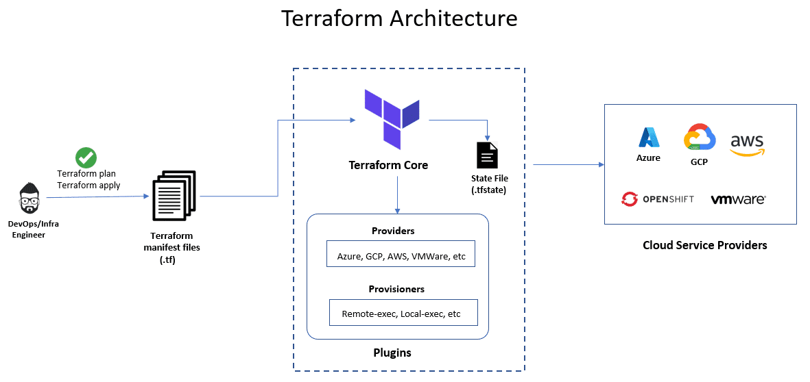

Inhoud:
Vorige keer hebben we gekeken naar wat Infrastructure as Code is, waarom we het gebruiken en wat de Key Principes zijn. Herinneren jullie je de termen Declarative, Immutable en Idempotency nog?
In deze les gaan we kennismaken met Terraform als tool voor Infrastructure as Code (IaC). We gaan het hebben over waarom Terraform wordt gebruikt, de voor- en nadelen en je krijgt een gedetailleerde uitleg over het opstellen van een Terraform-bestand met stapsgewijze voorbeelden voor het implementeren van resources in Microsoft Azure. Je gaat daarna zelf aan de slag met Terraform in combinatie met ESXi en/of Azure.
Terraform is een krachtig Infrastructure as Code (IaC)-hulpmiddel van HashiCorp. Met Terraform kun je jouw infrastructuur, zowel on-premises (lokaal) als in de cloud, definiëren, uitrollen en beheren met code. Dankzij de plugin-gebaseerde architectuur is Terraform makkelijk uit te breiden en aan te passen.
Terraform wordt ingezet om verbinding te maken met diverse infrastructuurplatformen en complexe beheerscenario’s te realiseren over meerdere clouds heen. Enkele voordelen zijn:
Traditioneel moest je bij het opzetten van een Windows- of Linux-server handmatig allerlei stappen doorlopen, zoals klikken, scripts draaien en configureren van opslag en netwerken. Bij honderden of duizenden servers wordt dit erg complex en foutgevoelig.
IaC biedt een oplossing door je infrastructuur met een declaratieve taal te definiëren. Hierdoor ben je in staat om:
Terraform bestaat hoofdzakelijk uit twee onderdelen:
Een typische workflow met Terraform bestaat uit de volgende stappen:
Definieer je infrastructuur als code in de HashiCorp Configuration Language (HCL).
Bijvoorbeeld, een Virtual Network configureren in Azure kan er zo uitzien:
# Definieer een Virtual Network
resource "azurerm_virtual_network" "default_vnet" {
name = "example-vnet"
address_space = ["172.31.0.0/16"]
location = azurerm_resource_group.example.location
resource_group_name = azurerm_resource_group.example.name
}
Terraform vergelijkt jouw code met de huidige infrastructuur en laat een plan zien met de voorgestelde veranderingen.
Als je akkoord gaat met het plan, voer je de wijzigingen uit zodat je infrastructuur aangepast wordt.
Bij individuele gebruikers wordt de Terraform state lokaal opgeslagen. Voor teams zijn er cloud- of enterprise-versies beschikbaar die de state centraal beheren.

terraform init, terraform plan en terraform apply.Provisioners worden gebruikt om extra configuratie of setup-taken uit te voeren nadat de infrastructuur is uitgerold.
Denk aan taken zoals het kopiëren van bestanden naar een VM of het uitvoeren van configuratieprogramma’s zoals Chef of Puppet.
Het gebruik van provisioners wordt vaak als laatste redmiddel gezien, omdat ze moeilijk te plannen zijn en directe toegang tot kritieke systemen geven.
Modules zijn herbruikbare configuratieblokken die je kunt gebruiken om samenhangende onderdelen van je infrastructuur te groeperen.
Elke Terraform-configuratie heeft minstens één module: de root module. Je kunt daarnaast extra, “child” modules aanroepen.
Er is een grote collectie modules beschikbaar in de Terraform Registry.
Terraform bewaart de huidige staat van je infrastructuur in een bestand genaamd terraform.tfstate.
Dit bestand helpt Terraform om veranderingen te plannen en toe te passen.
De state file kan lokaal worden opgeslagen of centraal in een teamomgeving.
De state file is een belangrijk onderdeel van hoe Terraform werkt. Het is een JSON-bestand waarin alle informatie over de beheerde resources wordt opgeslagen, inclusief hun huidige status en afhankelijkheden.
Terraform gebruikt dit state-bestand om te bepalen welke veranderingen nodig zijn wanneer er een nieuwe configuratie wordt toegepast. Ook voorkomt het dat resources onnodig worden herbouwd bij herhaalde uitvoeringen van Terraform.
Je kunt het state-bestand lokaal opslaan op de machine waar Terraform draait, of op een externe locatie met een remote backend, zoals een Azure Storage Account, Amazon S3 of HashiCorp Consul. Het is erg belangrijk om dit bestand goed te beveiligen en regelmatig back-ups te maken, omdat het gevoelige informatie bevat over de infrastructuur die je beheert. Standaard wordt de state file in dezelfde directory als je manifest opgeslagen.
Voor dit vak gaan we Azure en een ESXi server gebruiken die jullie hebben ingericht op Skylab. Standaard kan Terraform wel met Azure maar niet met ESXi ‘praten’. Wel met VMWare vCenter, maar omdat dat dit vak onnodig complex maakt houden we het hiervoor bij ESXi. Als Terraform niet standaard met iets kan praten gebruik je een custom provider plugin. Omdat we deze (custom) provider plugin gebruiken moeten we deze ergens in de code bekend maken. Dat kan in een los providers.tf bestand maar je mag het ook (bovenin) je main.tf bestand zetten:
terraform {
required_providers {
esxi = {
source = "registry.terraform.io/josenk/esxi"
}
}
}
En voor Azure ziet het er net weer iets anders uit:
terraform {
required_providers {
azurerm = {
source = "hashicorp/azurerm"
version = "~> (actueel versienummer)"
}
}
De ESXi provider heeft informatie nodig waar de ESXi server te vinden is waar je tegenaan wil praten. We hebben dus een blok ‘provider’ nodig. In dit blok geef je onder andere het IP adres op, welke user gebruikt moet worden e.d. Let op, dit is niet bij elke provider hetzelfde. Vaak kun je in de documentatie van een provider informatie vinden hoe zo’n blok eruit moet zien. Voor de josenk/esxi provider kan het er alsvolgt uitzien:
# Details voor de provider
provider "esxi" {
esxi_hostname = "192.168.100.84" #vul hier jouw ESXi IP nummer in
esxi_hostport = "22"
esxi_hostssl = "443"
esxi_username = "root"
esxi_password = "Welkom01!"
}
En voor Azure heb je hier een blokje nodig met informatie over je subscription:
provider "azurerm" {
resource_provider_registrations = "none"
subscription_id = "xxxxxx-xxxx-xxxx-xxxx-xxxxxxxxx"
features{}
}
Terraform weet nu waar we iets willen gaan doen en met welke provider. Maar nog niet dat we deze VM willen maken hoe deze VM eruit moet gaan zien. Welke virtuele hardware wil je in de VM stoppen? Daar moeten we een ‘resource’ voor aanmaken in het bestand. Deze resource krijgt een naam en je kunt aangeven hoeveel cpu’s, memory en storage je resource moet krijgen. Ook kun je bijvoorbeeld aangeven welk netwerk er gekoppeld moeten worden.
resource "esxi_guest" "vmtest" {
guest_name = "vmtest"
disk_store = "datastore1"
ovf_source = "https://cloud-images.ubuntu.com/releases/24.04/release/ubuntu-24.04-server-cloudimg-amd64.ova"
network_interfaces {
virtual_network = "VM Network"
}
}
Je ziet ook de regel ovf_source staan. Dit is een verwijzing naar een image wat Terraform moet gebruiken om de VM mee aan te maken. Terraform zal deze .ova file omzetten in een disk voor de VM. De VM gebruikt dit uiteindelijk als boot en data disk. In dit image zit een complete Ubuntu 24.04 server VM.
Voor Azure heb je in ieder geval blokjes nodig voor je resource group, een vnet, een subnet, de nic, en de vm zelf. Voorbeelden kun je vinden in de repository van de provider : https://github.com/hashicorp/terraform-provider-azurerm/tree/main/examples/virtual-machines
Als je een configuratie gemaakt hebt zijn er 3 belangrijke commando’s voor het gebruik van Terraform.
Als eerste moet je ervoor zorgen dat je provider beschikbaar is en dat een aantal files klaar worden gezet. Dat doe je met
terraform init
Wil je vervolgens de deployment van de VM’s gaan uitvoeren, dan kun je dat doen met:
terraform apply
Zoals je ziet krijg je vlak voor het uitvoeren van de deployment nog een yes/no vraag. Deze kun je eventueel overslaan door --auto-approve toe te voegen aan je commando:
terraform destroy --auto-approve
In bovenstaand voorbeeld hebben we het default ‘Cloud’ image van Ubuntu gedeployed op onze ESXi omgeving. Cloud images hebben een minimalistische configuratie en zijn redelijk klein in omvang (ongeveer 700mb). Ze zijn met name bedoeld voor public cloud omgevingen zoals Amazon’s EC2 of een Azure omgeving.
Om gebruik te kunnen maken van dit cloud image moeten we het na deployment op de een of andere manier configureren want het heeft bijvoorbeeld geen wachtwoord voor de default gebruiker.
De tool die gebruikt wordt om een image na deployment te configureren heet CloudInit. CloudInit maakt gebruik van twee yaml bestanden, metadata.yaml waarin gegevens over het systeem komen zoals hostname, netwerk informatie e.d. en een bestand userdata.yaml waar gegevens over de aan te maken gebruiker, te installeren packages etc komen.
In onderstaand voorbeeld zie je hoe je met een file userdata.yaml een user aan kunt maken op het systeem en hoe je een public key die je eerder aangemaakt hebt op het systeem zet. Hierdoor kun je door de combinatie van private key (op jouw systeem) en public key (op de vm) zonder wachtwoord inloggen op de vm. De userdata.yaml file kun je ook gebruiken om bijvoorbeeld packages te installeren.
metadata.yaml
#cloud-config
local-hostname: vm-host-naam
userdata.yaml
#cloud-config
users:
- name: username_die_je_aan_wil_maken
ssh-authorized-keys:
- ssh-ed25519 je_ssh_public_key
shell: /bin/bash
Je kunt voor de waardes van de keys (bv name, local-hostname) ook variabelen gebruiken vanuit een variabele bestand (zie bv het simple-variables voorbeeld).
Om cloudinit aan te roepen na het deployen van de VM door Terraform moet je bij de ESXi proider een blok guestinfo opnemen binnen de resource van de VM in je Terraform bestand. Dit is voor elke provider anders, maar de josenk/esxi provider verwacht 4 regels met data. In deze 4 regels staat de locatie van metadata.yaml, userdata.yaml en voor elk van deze files de codering die Terraform moet gebruiken (base64).
guestinfo = {
"metadata" = filebase64("metadata.yaml")
"metadata.encoding" = "base64"
"userdata" = filebase64("userdata.yaml")
"userdata.encoding" = "base64"
}
Waarbij userdata.yaml je template bestand is wat je gebruikt en local.templatevars een setje lokale variabelen in het terraform bestand. Cloudinit verwacht een base64 encoded bestand, vandaar de base64encode functie ervoor. De variabelen die je in je userdata.yaml bestand gebruikt haal je ook vanuit je Terraform variabelen. Meer info over Guestinfo voor de ESXi provider kun je vinden in de documentatie van de ESXi provider.
Bij de Azure provider werkt het net weer een beetje anders. Daar geef je binnen de specificatie van de VM de volgende regel op:
custom_data = base64encode(file("cloud-init.yml"))
Hier is dus geen metadata nodig, maar de opbouw van cloud-init.yml en userdata.yml van de ESXiprovider ziet er wel hetzelfde uit, behalve dat je geen user hoeft aan te maken en je SSH key niet hoeft te kopieren. Dat gebeurd al in je terraform manifest.
Let er op dat op de eerste de regel in beide files staat. Anders zal cloudinit de file niet gebruiken!
Je kunt tijdens het deployen van je infrastructuur Terraform ook output laten genereren. Bijvoorbeeld een bestand met daarin de IPs van de vm’s die je net gedeployed hebt. Je gebruikt daar de local_file resource voor. Je kunt daarmee eigen tekst combineren met variabelen die Terraform gebruikt, zoals het IP adres van een aangemaakte VM.
Je kunt bij de local_file resource ook gebruik maken van een template. Zie hier voor De terraform templatefile documentatie
Een andere optie is het ‘streamen’ van tekst naar een file. Dit doe je doormiddel van de EOF functie. Zie deze site voor een uitleg. Let erop dat bij de provider die wij gebruiken (josenk/esxi) informatie uit de vm resource kan worden gehaald door deze aan te roepen door bijvoorbeeld esxi_guest.dbserver te gebruiken met daarna de informatie die je wil hebben. Dus bijvoorbeeld esxi_guest.dbserver.ip_address of esxi_guest.dbserver.guest_name. Als je meerdere vm’s in 1 terraform bestand hebt kun je met een for loop werken, waarbij de gevonden ip’s samengevoegd worden in het bestand, elk op een nieuwe regel.
In 2023 is er een extra mogelijkheid bijgekomen via een provider die gemaakt is door RedHat. Deze cloud.terraform provider heeft de mogelijkheid om een inventory voor je aan te maken. Je kunt er hier meer over lezen.
Bij Azure kun je de variabele ${azurerm_public_ip.pip.ip_address} gebruiken om het publieke IP adres op te halen en ${azurerm_network_interface.nic.private_ip_address} voor het private adres.
OpenTofu is een open-source fork van Terraform (afgeleid van versie 1.5.6).
De voordelen van OpenTofu zijn onder andere:
Deze twee opdrachten maak je in tweetallen. 1 persoon maakt de VM’s op ESXi en de andere persoon maakt ze in Azure. Werk samen aan de code.
Opdracht 1 :
A. (ESXi) Maak een terraform manifest voor 1 Ubuntu VM met 1 vcpu en 1024MB geheugen. Je zult zien dat de VM start en dat via de remote console van ESXi een prompt kunt zien. Maar je kunt er nog niks mee… Daarom mag je de VM verwijderen. De code bewaar je wel.
B. (Azure) Maak een terraform manifest voor 1 Ubuntu VM, gebaseerd op de Standard_B2ats_v2 sizing.
Opdracht 2 :
A. (ESXi) Maak een terraform deployment file waarin je in totaal 3 Ubuntu VM’s deployed met 1 vcpu en 2048MB geheugen, met de volgende kenmerken:
- Je hebt het Ubuntu 24.04 cloudimage gebruikt
- Er is een resource voor 2 Ubuntu VM’s die de naam webserver hebben
- Er is een resource voor 1 Ubuntu VM die de naam databaseserver heeft.
- Via cloudinit maak je op de 3 vm’s een gebruiker aan met sudo rechten zonder dat er alsnog een wachtwoord wordt gevraagd. (De volgende criteria zoek je zelf op in de voorbeelden van de provider, zie voor de link hieronder)
- Via cloudinit zet je je public ssh-key (let op gebruik je ED25519 key) op de 3 vm’s gezet
- Via cloudinit installeer je de packages wget en ntpdate.
- Het ip adres van elke machine komt in een bestand op je beheer systeem.
- Maak in je Terraform manifest gebruik van variabelen waar dit kan. Zet deze variabelen in een apart bestand.
Gebruik hiervoor de voorbeelden in de IAC Git repository en de voorbeelden in de Git Repository van de ESXI-terraform provider
B. (Azure) Maak 1 terraform manifest waarin je 2 Ubuntu 24.04 VM in Azure deployed met de volgende kenmerken:
- De VM is van het type “Standard_B2ats_v2”
- Je eerder geuploade SSH key wordt gebruikt.
- Je VM heeft een publiek IP adres
- Je maakt de user ‘iac’ aan.
- Via CloudInit wordt er een bestand ‘hello.txt’ in /home/iac geplaatst met de inhoud ‘Hello World’
- Het ip adres van elke machine komt in een bestand op je beheer systeem.
- Het moet dus 1 manifest zijn waarin 2 dezelfde VM’s aangemaakt worden.
- Maak in je Terraform manifest gebruik van variabelen waar dit kan. Zet deze variabelen in een apart bestand.
Gebruik de volgende Git repository met voorbeelden van Hashicorp voor Azure.
Maak een korte video waarin je laat zien dat je vanuit de VM op ESXi van opdracht 2A een SSH sessie kunt starten naar de Azure VM (opdracht 2B)